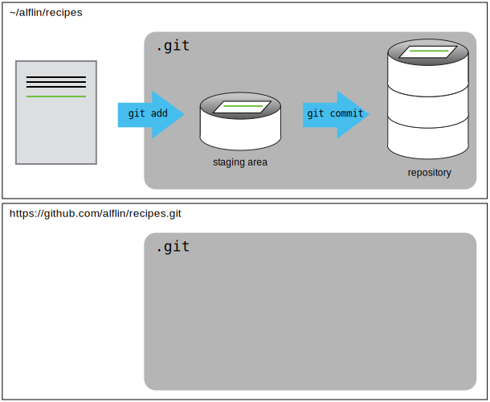

Зображення 1 з 1: ‘Comic: аспірант надсилає «FINAL.doc» своєму науковому керівнику. Декілька дедалі інтенсивніших та неприємних раундів обміну коментарями і версіями закінчуються файлом під назвою "FINAL_rev.22.comments49.corrections.10.#@$%HYDIDCOMETOGRADSCHOOL????.doc"’
Зображення 1 з 1: ‘Використання git restore для відновлення попередньої версії двох файлів’
Малюнок 2
Зображення 1 з 1: ‘Як працює git: зміни додаються до зони стейджингу (git add), зберігаються у репозиторії (git commit), та можуть бути відновлені з репозиторію (git checkout)’
Зображення 1 з 1: ‘Початок створення нового репозиторію на GitHub’
Малюнок 2
Зображення 1 з 1: ‘Другий крок створення репозиторію на GitHub: імʼя репозиторію та відсутність файлів readme та ліцензії’
Малюнок 3
Зображення 1 з 1: ‘Після створення нового репозиторію, GitHub показує сторінку з URL та додатковою інформацією. Вона містить інструкції для налаштування нового репозиторію GitHub як віддаленого’
Малюнок 4
Зображення 1 з 1: ‘Додавання змін до зони стейджингу за допомогою "git add" та зберігання їх у репозиторії за допомогою "git commit"’
Малюнок 5
Зображення 1 з 1: ‘Як і наш локальний репозиторій, "recipes" на GitHub також є репозиторієм git, але наразі цей репозиторій пустий’

Малюнок 6
Зображення 1 з 1: ‘Натискання на "SSH" для отримання SSH URL-адреси репозиторію замість його HTTPS URL-адреси’
Малюнок 7
Зображення 1 з 1: ‘Натискання "Copy to Clipboard" на GitHub, щоб скопіювати URL-адресу репозиторію’
Малюнок 8
Зображення 1 з 1: ‘"git push origin" надсилає зміни з локального репозиторію до віддаленого, що робить віддалений репозиторій точною копією локального.’
Зображення 1 з 1: ‘Налаштування доступу до репозиторію для співавторів (щоб відкрити цю сторінку, перейдіть на "Settings", а потім оберіть "Collaborators")’
Малюнок 2
Зображення 1 з 1: ‘"git clone" створює копію віддаленого репозиторію з GitHub, що дозволяє іншій людині створити свій локальний репозиторій, до якого вони можуть вносити зміни.’
Зображення 1 з 1: ‘Знімок екрана RStudio, що показує меню файлу з вибраним пунктом "New Project..."’
Малюнок 2
Зображення 1 з 1: ‘Знімок екрана RStudio, що показує діалогове вікно New Project з обраним пунктом "Create project from existing directory"’
Малюнок 3
Зображення 1 з 1: ‘Вікно RStudio із діалогом "Create Project From Existing Directory". У діалоговому вікні робочий каталог проєкту було обрано "~/Desktop/recipes"’
Малюнок 4
Зображення 1 з 1: ‘Вікно RStudio після створення нового проєкту з великою стрілкою, що вказує на вертикальну панель меню Git.’
Малюнок 5
Зображення 1 з 1: ‘Використання панелі редактора для внесення змін до файлу "pluto.txt" у RStudio’
Малюнок 6
Зображення 1 з 1: ‘Вікно RStudio, що показує меню Git з обраним пунктом "Commit..."’
Малюнок 7
Зображення 1 з 1: ‘Перегляд змін у RStudio. У верхній лівій панелі перераховані файли, які можна додати або вилучити з коміту. Права верхня панель призначена для введення повідомлення коміту. Нижня панель показує інформацію про поточний файл, вибраний у верхній лівій панелі.’
Малюнок 8
Зображення 1 з 1: ‘Вікно RStudio, що показує меню Git з обраним пунктом "History"’
Малюнок 9
Зображення 1 з 1: ‘Вікно RStudio із діалогом для перегляду змін після натискання кнопки "History". Верхня панель містить перелік комітів у репозиторії, на кшталт `git log`. Нижня панель показує зміни у відповідному коміті, обраному в верхній панелі.’
Малюнок 10
Зображення 1 з 1: ‘Знімок екрану RStudio, що показує .gitignore, відкритий у вікні редактора з файлами .Rproj.user, .Rhistory, .RData, та *.Rproj, доданими наприкінці’


 {alt=‘Два документи окремо
додаються до зони стейджингу за допомогою git add, а потім об’єднуються
в один коміт за допомогою git commit’}
{alt=‘Два документи окремо
додаються до зони стейджингу за допомогою git add, а потім об’єднуються
в один коміт за допомогою git commit’}